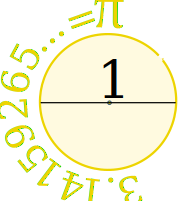
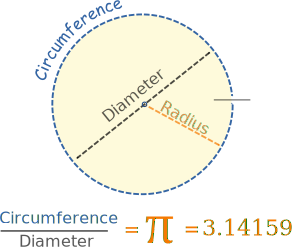
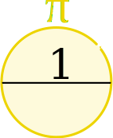
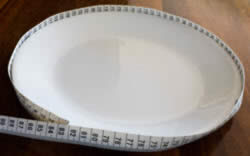
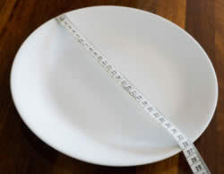
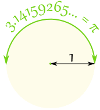

Pi (π)

Draw a circle with a diameter (all the way across the circle) of 1
Then the circumference (all the way around the circle) is 3.14159265... a number known as Pi
Pi (pronounced like "pie") is often written using the greek symbol π

The definition of π is:
The Circumference
divided by the Diameter
of a Circle.
The circumference divided by the diameter of a circle is always π, no matter how large or small the circle is!

To help you remember what π is ... just draw this diagram.
Finding Pi Yourself
Draw a circle, or use something circular like a plate.
Measure around the edge (the circumference):

I got 82 cm
Measure across the circle (the diameter):

I got 26 cm
Divide:
82 cm / 26 cm = 3.1538...
That is pretty close to π. Maybe if I measured more accurately?
Using Pi
We can use π to find a Circumference when we know the Diameter
Circumference = π × Diameter
Example: You walk around a circle which has a diameter of 100 m, how far have you walked?

Also we can use π to find a Diameter when we know the Circumference
Diameter = Circumference / π

Example: Sam measured 94 mm around the outside of a pipe ... what is its Diameter?
Radius
The radius is half of the diameter, so we can also say:

For a circle with a radius of 1
The distance half way around the circle is π = 3.14159265...
Digits
π is approximately equal to:
3.14159265358979323846…
The digits go on and on with no pattern.
π has been calculated to over 100 trillion decimal places and still there is no pattern to the digits, see Pi Normal.
Approximation
A quick and easy approximation for π is 22/7
22/7 = 3.1428571...
But as you can see, 22/7 is not exactly right. In fact π is not equal to the ratio of any two numbers, which makes it an irrational number.
A really good approximation, better than 1 part in 10 million, is:
355/113 = 3.1415929...
(think "113355", slash the middle "113/355", then flip "355/113")
Summary:
| 22/7 | = | 3.1428571... |
| 355/113 | = | 3.1415929... |
| π | = | 3.14159265... |
Remembering The Digits
I usually just remember "3.14159", but you can also count the letters of:
"May I have a large container of butter today"
3 1 4 1 5 9 2 6 5
To 100 Decimal Places
Here is π with the first 100 decimal places:
| 3.14159265358979323846264338327950288 4197169399375105820974944592307816 4062862089986280348253421170679... |
Calculating Pi Yourself
There are many special methods used to calculate π and here is one you can try yourself: it is called the Nilakantha series (after an Indian mathematician who lived in the years 1444–1544).
It goes on for ever and has this pattern:
3 + 4 2×3×4 − 4 4×5×6 + 4 6×7×8 − 4 8×9×10 + ...
(Notice the + and − pattern, and also the pattern of numbers below the lines.)
It gives these results:
| Term | Result (to 12 decimals) |
|---|---|
| 1 | 3 |
| 2 | 3.166666666667 |
| 3 | 3.133333333333 |
| 4 | 3.145238095238 |
| ... | ... etc! ... |
Get a calculator (or use a spreadsheet) and see if you can get better results.
Pi Day
Pi Day is celebrated on March 14. March is the 3rd month, so it looks like 3/14